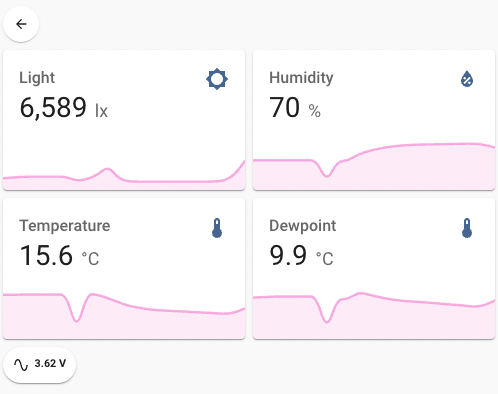

sensor-lora
Home Assistant LoRa-connected sensor firmware for an ESP32
richardjlyon / sensor-lora, version 0.1

OK. It's pretty niche. But if you happen to have, say, a greenhouse that is beyond packet-radio transmission distance for a battery powered temperature sensor, here's arduino firmware for an ESP32 providing Home Assistant sensor data over a LoRa link.
Yes. You can now check your greenhouse temperature from 5 kilometers away. Handy!
Drivers for a VEM7700 light sensor, Sensirion SHT31 temperature and humidity sensor, and the device's battery voltage are provided. The firmware's plugin architecture makes it easily extensible to provide new sensors.
License
This project is licensed under the MIT License - see file LICENSE.md for details.
Version history
0.1 Initial release.